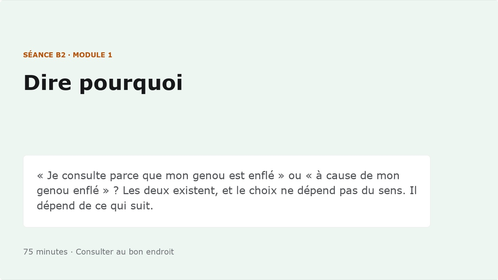
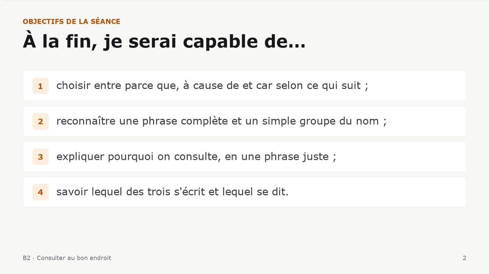
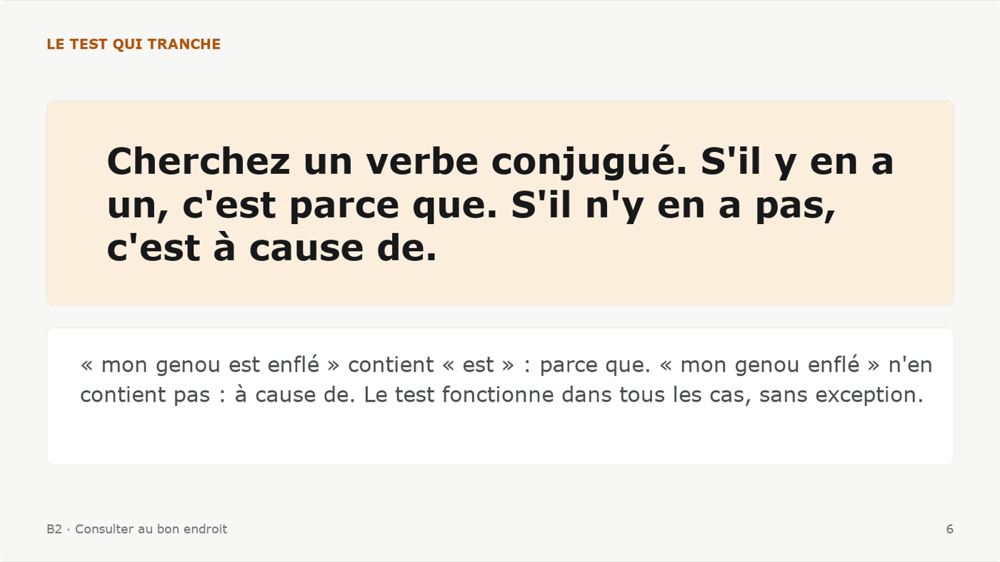
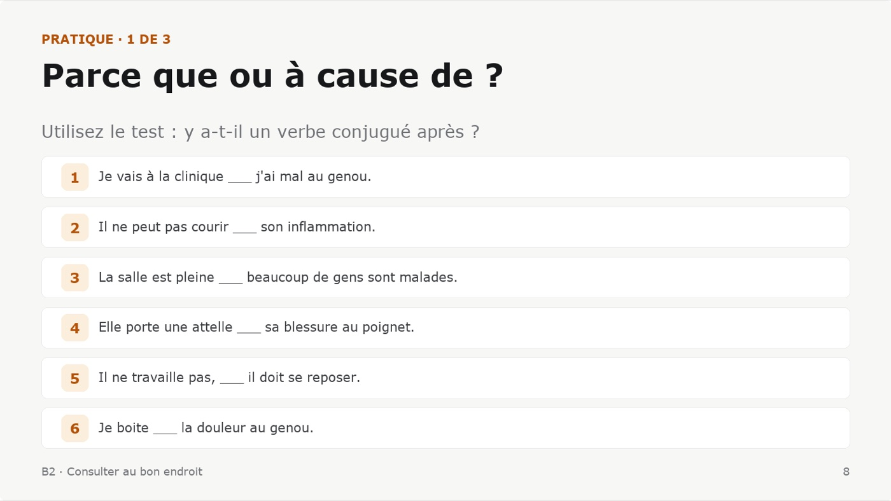
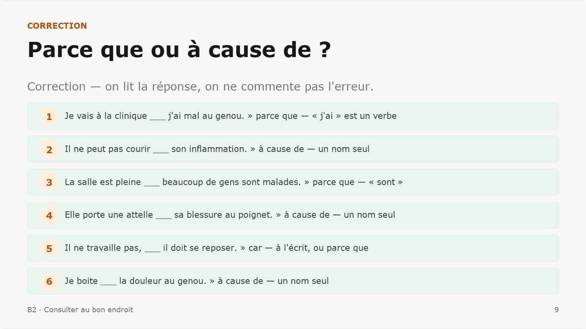
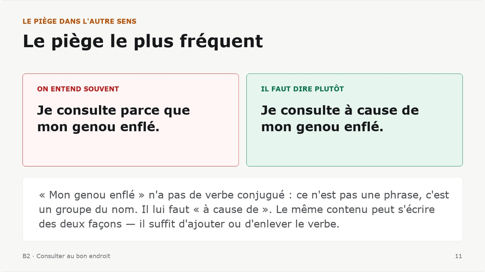
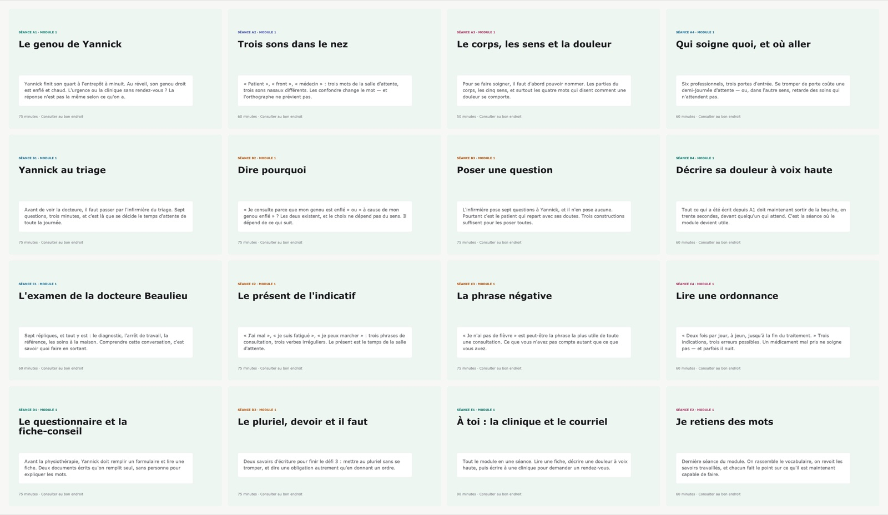
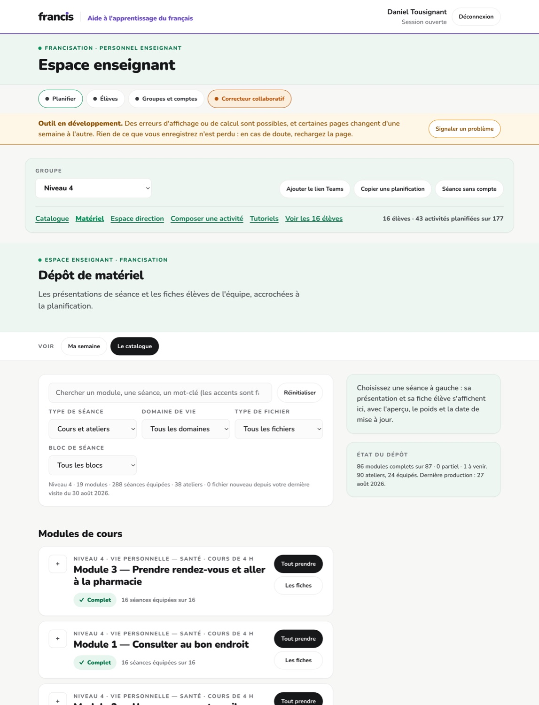

1 · La page de garde
Le code, le titre, la durée.

Direction et enseignants · Le matériel
Ce que l'enseignant projette en classe, sans rien préparer : 1 264 diaporamas, un par séance, 15 154 diapositives en tout, et 12 524 notes de présentateur qui disent quoi faire à chaque page. Douze types de diapositives, pas un de plus, et le même fichier de contenu que la fiche remise à l'élève.
Compté sur le dépôt le 30 août 2026. Les diapositives montrées sont des fichiers réels.
Chaque séance a son diaporama, prêt à projeter : pas un
gabarit à remplir, une séance construite. L'enseignant l'ouvre dans PowerPoint, Keynote
ou Google Slides — c'est un .pptx ordinaire, sans dépendance et sans
compte.
Ce qu'il y a dedans
Les 15 154 diapositives des 1 264 diaporamas sont bâties avec douze blocs. C'est ce qui rend la collection reconnaissable : l'enseignant qui a projeté une séance sait lire toutes les autres, et l'élève reconnaît la page où il est.
| Bloc | Fois | Ce qu'il fait |
|---|---|---|
| Pratique | 2245 | l'exercice projeté — suivi de son corrigé, même mise en page |
| Tableau | 1600 | l'analyse en rangées, séparées par un filet |
| Regle | 1450 | un énoncé, gros, seul — la diapositive qu'on photographie |
| Titre | 1264 | la page de garde : le code de la séance, son titre, sa durée |
| Objectifs | 1264 | « À la fin, je serai capable de… » — la voix de l'élève, pas celle du programme |
| Billet | 1264 | le seul bloc foncé autorisé, et il ferme la séance |
| Piege | 1039 | ce qu'on entend souvent, à côté de ce qu'il faut dire |
| Dialogue | 1003 | les répliques, le locuteur en gras |
| Cartes | 875 | une grille de cas, deux ou trois colonnes |
| Declencheur | 840 | la question d'ouverture, avec sa photo pédagogique |
| Vocabulaire | 395 | les mots avec leur définition, l'article compris |
| Capture | 17 | l'écran de l'exercice interactif, projeté avant qu'on l'ouvre |
12 524 diapositives sur 13 256 portent des notes de présentateur — pas un résumé de la diapositive, mais ce qu'il faut faire : la question à poser, ce qu'on écrit au tableau, l'erreur qui va venir et quoi en faire. C'est ce qui permet à un remplaçant de prendre la séance.
À quoi ça ressemble
Voici six diapositives de la même séance — B2 du module 1, « Dire pourquoi » — redessinées à partir du fichier livré.
Le code, le titre, la durée.

Ce que l'élève saura faire à la fin.

Un énoncé, gros, seul.

Le même exercice que dans le module.

Généré juste après, même mise en page.

Ce qu'on entend souvent, ce qu'il faut dire.

Un module d'un coup d'œil
Une image par séance, celle que le portail montre à l'enseignant.

Comment l'enseignant les obtient
Les diaporamas et les fiches vivent au même endroit, dans l'onglet Matériel du portail : « Tout prendre » descend la séance entière — le diaporama, la fiche, et le corrigé s'il existe.
Diaporamas et fiches, au même endroit.

Un seul contenu, deux sorties. Le fichier de séance qui produit ce diaporama produit aussi la fiche de l'élève. Corriger une règle la corrige des deux côtés — et c'est la seule façon connue d'éviter qu'un paquet de photocopies dise autre chose que ce qui est projeté au tableau.